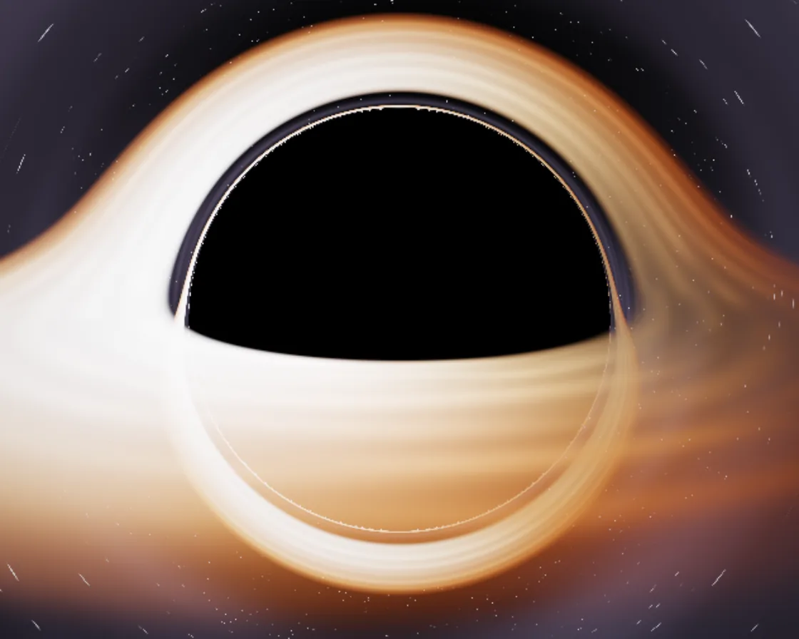

Black hole
Black hole is a WebGL effect: each ray follows the exact light-orbit equation round a spinning hole. One plain JavaScript file with no dependencies; add it with npx motion-library add black-hole.

Open it live, tune it and copy the code
What is Black hole?
Gargantua as the film drew it: a thin white disc arching over and under the shadow, a hairline photon ring, stars stretched at its edge.
How does Black hole work?
Each ray follows the light-orbit equation u″ + u = 3Mu², reading the disc at every crossing; spin shifts the shadow.
How do I add Black hole to my website?
- In your project folder, run
npx motion-library add black-hole. It writesanimations/black-hole.js. Needs Node 18 or newer. - Import it and call it with a container element that has a size:
import fx from './animations/black-hole.js'; const stop = fx(document.querySelector('#hero')); - Call
stop()to clean up, for example when a component unmounts.
Every setting below is also a flag, so you can install it already tuned: npx motion-library add black-hole --spin 3.
What settings can I tweak?
| Setting | Flag | Default | Range | Step |
|---|---|---|---|---|
| Disk speed | --spin | 1 | 0 to 3 | 0.05 |
| Camera height | --tilt | 0.11 | 0.05 to 0.6 | 0.01 |
Specifications
- Renderer
- WebGL
- Category
- Chrome & 3D
- Dependencies
- None
- File size
- 18.6 KB, unminified
- Interactive
- No: it plays on its own
- Reduced motion
- Respects prefers-reduced-motion
- Licence
- MIT-0: use it anywhere, no credit needed
Source code
// Gargantua, the black hole from Interstellar, the way the film drew it. For the film, Kip Thorne's equations were
// turned into a renderer at Double Negative that traced light round a spinning black hole; this does the same job
// for every pixel, every frame. A light ray near a black hole stays in one flat plane (through the hole, the camera
// and the ray), so each pixel's ray is followed in its own plane with the exact Schwarzschild orbit equation for
// light, u'' + u = 3Mu² (u is 1/r, primes are turns round the hole), stepped with RK4. The disc lies in the
// equator, and the angles where the ray's plane cuts it are known in advance, so the integrator lands exactly on
// each crossing and reads the disc there: once in front (the band across the shadow), once more after the ray has
// swung round the back (the halo arched over the top and under the bottom), and again and again for rays skimming
// the photon sphere (the thin bright ring that hugs the shadow). Rays that dip inside the horizon are lost; the
// rest leave in a bent direction and pick up the stars behind, so the sky is stretched into arcs near the edge and
// shows second images on the far side. Spin is folded in by giving each ray a slightly smaller mass when it circles
// with the spin and a larger one against it, which squashes and shifts the shadow the way frame dragging does. As in
// the film, there is no Doppler beaming and no colour shift: the disc is an even warm white. Its texture is banded
// noise carried round at each radius' own orbital speed, so the inside laps the outside and the streaks wind up;
// two copies of it, a half-cycle apart, cross-fade before the winding gets too tight. Near the shadow's edge, where
// one pixel spans whole laps round the hole, more rays are averaged and each extra lap counts for the sliver of the
// pixel it really covers, so the photon ring is one clean line instead of glitter. The image is rendered in high
// dynamic range and then bloomed from its mipmaps, like light spilling in a camera lens.
const PARAMS = { spin: 1, tilt: 0.11 };
export default function (stage) {
const canvas = document.createElement('canvas');
canvas.style.cssText = 'position:absolute;inset:0;width:100%;height:100%;display:block';
stage.append(canvas);
const gl = canvas.getContext('webgl2', { antialias: false });
if (!gl || !gl.getExtension('EXT_color_buffer_float')) { stage.textContent = 'This needs WebGL2 with float render targets.'; return () => canvas.remove(); }
const reduce = matchMedia('(prefers-reduced-motion: reduce)').matches;
const VS = `#version 300 es
in vec2 p; out vec2 uv; void main() { uv = p * .5 + .5; gl_Position = vec4(p, 0, 1); }`;
const SCENE = `#version 300 es
precision highp float; in vec2 uv; out vec4 o;
uniform vec2 R; uniform float T, SPIN, FOC; uniform vec3 CP, CF, CR, CU;
#define PI 3.14159265
const float RIN = 4.6, ROUT = 60.; // the disc's edges, in units of the hole's mass
float h21(vec2 p) { vec3 q = fract(p.xyx * .1031); q += dot(q, q.yzx + 33.33); return fract((q.x + q.y) * q.z); }
vec3 h33(vec3 p) { p = fract(p * vec3(.1031, .103, .0973)); p += dot(p, p.yxz + 33.33); return fract((p.xxy + p.yxx) * p.zyx); }
float h31(vec3 p) { p = fract(p * .1031); p += dot(p, p.zyx + 31.32); return fract((p.x + p.y) * p.z); }
float n1(float x) { float i = floor(x), f = fract(x); return mix(h21(vec2(i, 7.)), h21(vec2(i + 1., 7.)), f * f * (3. - 2. * f)); }
float pn(vec2 p, float per) { // value noise that wraps round in y every per cells
vec2 i = floor(p), f = fract(p); f = f * f * (3. - 2. * f);
float y0 = mod(i.y, per), y1 = mod(i.y + 1., per);
return mix(mix(h21(vec2(i.x, y0)), h21(vec2(i.x + 1., y0)), f.x), mix(h21(vec2(i.x, y1)), h21(vec2(i.x + 1., y1)), f.x), f.y);
}
float vn3(vec3 p) { vec3 i = floor(p), f = fract(p); f = f * f * (3. - 2. * f);
return mix(mix(mix(h31(i), h31(i + vec3(1, 0, 0)), f.x), mix(h31(i + vec3(0, 1, 0)), h31(i + vec3(1, 1, 0)), f.x), f.y),
mix(mix(h31(i + vec3(0, 0, 1)), h31(i + vec3(1, 0, 1)), f.x), mix(h31(i + vec3(0, 1, 1)), h31(i + 1.), f.x), f.y), f.z); }
// ---- the disc: fine concentric bands, and streaks drawn out along the orbit, carried round at Keplerian speed
float lodf(float freq, float fw) { return smoothstep(.55, .2, freq * fw); } // fade a detail finer than the pixel
float layer(float r, float th, float tl, float seed, float fr, float fa) {
float a = (th + SPIN * .62 * pow(RIN / r, 1.5) * tl) / (2. * PI) + seed * .37; // angle in the turning frame, in turns
float s = .5 * pn(vec2(r * .9 + seed * 13., a * 14.), 14.) * lodf(14., fa) + .5 * (1. - lodf(14., fa));
float w = .5 * lodf(26., fa) * lodf(2.6, fr);
s += w * (pn(vec2(r * 2.6 + seed * 7., a * 26.), 26.) - .5);
w = .32 * lodf(48., fa) * lodf(7., fr);
s += w * (pn(vec2(r * 7. - seed * 5., a * 48.), 48.) - .5);
w = .2 * lodf(80., fa) * lodf(18., fr);
s += w * (pn(vec2(r * 18. + seed * 3., a * 80.), 80.) - .5);
return s;
}
vec4 disc(float r, float th, float fr, float fa) {
// two copies of the moving texture, half a cycle apart; each starts unwound and fades out before it winds too tight
const float P = 22.;
float c1 = floor(T / P), t1 = T - c1 * P, c2 = floor((T + P * .5) / P), t2 = T + P * .5 - c2 * P;
float w1 = 1. - abs(t1 / P * 2. - 1.), w2 = 1. - w1;
float s = .5 + ((layer(r, th, t1, c1, fr, fa) - .5) * w1 + (layer(r, th, t2, c2 + 50., fr, fa) - .5) * w2) / sqrt(w1 * w1 + w2 * w2);
// fixed fine banding, with a slow wobble so the rings shimmer as they stream
float wob = .25 * pn(vec2(r * .35, (th + SPIN * .3 * T * pow(RIN / r, 1.5)) / (2. * PI) * 6.), 6.);
float rr = r + wob, b = 0.;
b += .45 * (n1(rr * 1.7) - .5) * lodf(1.7, fr);
b += .35 * (n1(rr * 4.3 + 11.) - .5) * lodf(4.3, fr);
b += .25 * (n1(rr * 11. + 23.) - .5) * lodf(11., fr);
b += .18 * (n1(rr * 27. + 41.) - .5) * lodf(27., fr);
b += .14 * (n1(rr * 61. + 5.) - .5) * lodf(61., fr);
float tex = clamp(s * (1. + 1.3 * b), 0., 1.6);
float edge = smoothstep(RIN - .3, RIN + 1.4, r) * smoothstep(ROUT, ROUT * .3, r);
float I = pow(RIN / r, 1.9) * edge;
float dens = edge * (.3 + .9 * tex) * pow(RIN / r, .9);
vec3 col = mix(vec3(1., .8, .58), vec3(1., .46, .18), smoothstep(RIN + 1., 26., r)); // hotter inside: white to peach
return vec4(col * I * (.2 + 1.6 * tex * tex) * 9., 1. - exp(-dens * 2.6));
}
// ---- the sky behind: stars and a faint band of the galaxy. A star is a point: its image is drawn one pixel wide
// across the lens's stretch (found from how the escape direction changes from pixel to pixel) and as long as the
// lens draws it out, brighter by the lens's magnification
vec3 sky(vec3 d, vec3 jx, vec3 jy, float px0) {
vec3 c = vec3(0);
jx /= px0; jy /= px0; // in units of an unlensed pixel
float a11 = dot(jx, jx), a12 = dot(jx, jy), a22 = dot(jy, jy), det = max(a11 * a22 - a12 * a12, 1e-7);
float mu = min(1. / max(length(cross(jx, jy)), 1e-5), 30.), s0 = pow(1.2e-4 / px0, 2.);
for (int l = 0; l < 3; l++) {
float sc = l == 0 ? 30. : l == 1 ? 70. : 160., th = l == 0 ? .86 : l == 1 ? .8 : .72;
vec3 p = d * sc, id = floor(p), r = h33(id + float(l) * 41.);
if (r.x < th) continue;
vec3 sp = normalize(id + .25 + .5 * r.zxy) * sc;
if (any(notEqual(floor(sp), id))) continue;
vec3 dl = (sp / sc - d) / px0;
float bx = dot(jx, dl), by = dot(jy, dl);
vec2 x = vec2(a22 * bx - a12 * by, a11 * by - a12 * bx) / det; // the star's offset, in pixels
// its image: the star's tiny size seen through the inverse stretch, blurred by half a pixel
float c11 = s0 * a22 / det + .3, c12 = -s0 * a12 / det, c22 = s0 * a11 / det + .3, cd = c11 * c22 - c12 * c12;
float q = (c22 * x.x * x.x - 2. * c12 * x.x * x.y + c11 * x.y * x.y) / cd;
float F = pow((r.x - th) / (1. - th), 2.5) * (l == 0 ? 2.2 : l == 1 ? .9 : .4);
c += mix(vec3(.75, .82, 1.), vec3(1., .8, .6), r.y) * F * mu * .3 / (6.2832 * sqrt(cd)) * exp(-.5 * min(q, 40.));
}
vec3 gn = normalize(vec3(.3, 1., -.45));
float px = sqrt(max(a11, a22)) * px0, g = dot(d, gn), lod = smoothstep(.06, .01, px);
float neb = vn3(d * 3.) * .55 + vn3(d * 7.) * .3 + (vn3(d * 17.) - .5) * .3 * lod;
float band = exp(-g * g * 14.) * smoothstep(.3, .8, neb);
c += mix(vec3(.4, .36, .34), vec3(.22, .28, .42), neb) * band * .045;
return c;
}
// ---- one ray: followed in its own plane, the disc read wherever it crosses, until it falls in or gets away
float bcrit(vec3 rd, out float M) {
float r0 = length(CP); vec3 e1 = CP / r0, L = cross(e1, rd); float lL = length(L);
// spin: rays circling with it (L along +y) see a lighter hole and slip closer; against it, a heavier one
float psi = lL > 1e-6 ? L.y / lL : 0.;
M = 1. - .11 * psi + .05 * pow(max(psi, 0.), 3.);
return lL * r0 / (5.196 * M); // the impact parameter over the critical one
}
int trace(vec3 rd, out vec3 hit[4], out bool fell, out vec3 dinf) {
float M; bcrit(rd, M);
float r0 = length(CP); vec3 e1 = CP / r0;
vec3 e2 = normalize(rd - e1 * dot(rd, e1) + vec3(0, 1e-7, 0));
float dr = dot(rd, e1), dt = max(dot(rd, e2), 1e-5);
float u = 1. / r0, up = -u * dr / dt, phi = 0.;
// where this plane cuts the disc: e1.y cos(phi) + e2.y sin(phi) = 0, every half turn
float nc = mod(atan(-e1.y, e2.y), PI); if (nc < 1e-4) nc += PI;
int nh = 0; fell = false;
for (int k = 0; k < 4; k++) hit[k] = vec3(0);
for (int i = 0; i < 420; i++) {
float h = clamp((u < .05 ? .14 : .08) * u / max(abs(up), 1e-6), .002, .06);
bool cr = phi + h >= nc;
if (cr) h = nc - phi;
// RK4 on u'' = 3Mu² - u
float k1u = up, k1v = 3. * M * u * u - u;
float u2 = u + .5 * h * k1u, v2 = up + .5 * h * k1v; float k2u = v2, k2v = 3. * M * u2 * u2 - u2;
float u3 = u + .5 * h * k2u, v3 = up + .5 * h * k2v; float k3u = v3, k3v = 3. * M * u3 * u3 - u3;
float u4 = u + h * k3u, v4 = up + h * k3v; float k4u = v4, k4v = 3. * M * u4 * u4 - u4;
u += h / 6. * (k1u + 2. * k2u + 2. * k3u + k4u); up += h / 6. * (k1v + 2. * k2v + 2. * k3v + k4v);
phi += h;
if (u > .5 / M) { fell = true; break; } // inside the horizon, r = 2M
if (cr) { // the n-th time through the plane, on the disc or not
float r = 1. / u;
vec3 P = r * (cos(phi) * e1 + sin(phi) * e2);
if (nh < 4) hit[nh] = vec3(r, atan(P.z, P.x), r > RIN - .4 && r < ROUT ? phi : -1.);
nh++; nc += PI;
}
if (up < 0. && u < 1. / ROUT) break; // on its way out, past the disc: it escapes
}
// where it ends up: past the disc the path is nearly straight, so the asymptote is a short step further round
float pinf = phi + atan(max(u, 0.), max(-up, 1e-6));
dinf = cos(pinf) * e1 + sin(pinf) * e2;
return nh;
}
vec3 shade(vec3 hit[4], int nh, vec4 fr, vec4 fa, out float tr) {
vec3 col = vec3(0); tr = 1.;
for (int k = 0; k < 4; k++) {
if (k >= nh) break;
if (hit[k].z < 0.) continue;
// the third and later images are squeezed into the photon ring: only their smooth glow is resolved, and each
// lap round the hole makes an image some twenty times thinner, far below a pixel: it covers that much of one
vec4 d = disc(hit[k].x, hit[k].y, k > 1 ? max(fr[k], 1.) : fr[k], k > 1 ? max(fa[k], .1) : fa[k]);
d.a *= exp(-max(hit[k].z - 2.2 * PI, 0.) * 1.6);
col += tr * d.rgb * d.a; tr *= 1. - d.a;
}
return col;
}
void main() {
vec2 q = (uv * 2. - 1.) * vec2(R.x / R.y, 1.);
vec3 rd = normalize(CF * FOC + CR * q.x + CU * q.y);
vec3 hit[4]; bool fell; vec3 dinf;
int nh = trace(rd, hit, fell, dinf);
// how big a pixel is on the disc at each crossing, and on the sky (neighbours on another crossing: blurred)
vec3 jx = dFdx(dinf), jy = dFdy(dinf);
vec4 fr = vec4(fwidth(hit[0].x), fwidth(hit[1].x), fwidth(hit[2].x), fwidth(hit[3].x));
vec4 fa = vec4(fwidth(hit[0].y), fwidth(hit[1].y), fwidth(hit[2].y), fwidth(hit[3].y));
fa = min(fa, 2. * PI - fa) / (2. * PI);
float px0 = 2. / (FOC * R.y), tr;
vec3 col = shade(hit, nh, fr, fa, tr);
// (the sky's images packed against the shadow are too fine to resolve, and would only sparkle: let them fade)
float M, bc = bcrit(rd, M);
if (!fell) col += tr * sky(dinf, jx, jy, px0) * smoothstep(1.01, 1.08, bc);
// the photon ring is thinner than a pixel: near the critical impact parameter, average a few more rays
if (abs(bc - 1.) < .045) {
float t0; vec3 acc = shade(hit, nh, max(fr, vec4(1.)), max(fa, vec4(.1)), t0) + (col - shade(hit, nh, fr, fa, t0));
for (int s = 0; s < 3; s++) {
vec2 jit = (vec2(s == 0 ? .5 : -.25, s == 1 ? .5 : -.25) + .1 * vec2(float(s), -float(s))) / R.y * 2.;
vec3 rs = normalize(CF * FOC + CR * (q.x + jit.x) + CU * (q.y + jit.y));
vec3 hs[4]; bool fs; vec3 ds;
int ns = trace(rs, hs, fs, ds);
float ts; vec3 cs = shade(hs, ns, vec4(1.), vec4(.1), ts);
acc += cs;
}
col = acc * .25;
}
o = vec4(any(isnan(col)) || any(isinf(col)) ? vec3(0) : col, 1);
}`;
const COMP = `#version 300 es
precision highp float; in vec2 uv; out vec4 o;
uniform sampler2D S; uniform vec2 R;
float h21(vec2 p) { vec3 q = fract(p.xyx * .1031); q += dot(q, q.yzx + 33.33); return fract((q.x + q.y) * q.z); }
vec3 aces(vec3 x) { return clamp((x * (2.51 * x + .03)) / (x * (2.43 * x + .59) + .14), 0., 1.); }
vec3 tap(float l) { // a soft blur of mip level l: a ring of bilinear taps
vec2 t = exp2(l) / R; vec3 c = textureLod(S, uv, l).rgb * .25;
c += (textureLod(S, uv + t * vec2(.9, .4), l).rgb + textureLod(S, uv + t * vec2(-.4, .9), l).rgb
+ textureLod(S, uv + t * vec2(-.9, -.4), l).rgb + textureLod(S, uv + t * vec2(.4, -.9), l).rgb) * .1875;
return c;
}
void main() {
vec3 c = textureLod(S, uv, 0.).rgb;
vec3 bl = tap(1.5) * .34 + tap(3.) * .3 + tap(4.5) * .2 + tap(6.) * .1 + tap(7.) * .06;
c = mix(c, bl, .12) + bl * .3;
c = aces(c * 1.05);
vec2 v = uv - .5; c *= 1. - .35 * dot(v, v) * 1.6;
o = vec4(pow(c, vec3(1. / 2.2)) + (h21(gl_FragCoord.xy + fract(R.x * .1)) - .5) / 255., 1);
}`;
const sh = (t, s) => { const x = gl.createShader(t); gl.shaderSource(x, s); gl.compileShader(x); if (!gl.getShaderParameter(x, gl.COMPILE_STATUS)) throw new Error(gl.getShaderInfoLog(x)); return x; };
const program = fs => {
const p = gl.createProgram(); gl.attachShader(p, sh(gl.VERTEX_SHADER, VS)); gl.attachShader(p, sh(gl.FRAGMENT_SHADER, fs)); gl.bindAttribLocation(p, 0, 'p'); gl.linkProgram(p);
if (!gl.getProgramParameter(p, gl.LINK_STATUS)) throw new Error(gl.getProgramInfoLog(p));
const u = {}; for (let i = 0, n = gl.getProgramParameter(p, gl.ACTIVE_UNIFORMS); i < n; i++) { const nm = gl.getActiveUniform(p, i).name; u[nm] = gl.getUniformLocation(p, nm); }
return { p, u };
};
const scene = program(SCENE), comp = program(COMP);
gl.bindVertexArray(gl.createVertexArray()); gl.bindBuffer(gl.ARRAY_BUFFER, gl.createBuffer());
gl.bufferData(gl.ARRAY_BUFFER, new Float32Array([-1, -1, 3, -1, -1, 3]), gl.STATIC_DRAW); gl.enableVertexAttribArray(0); gl.vertexAttribPointer(0, 2, gl.FLOAT, false, 0, 0);
let W = 1, H = 1, tex = null, fb = null, levels = 1;
const resize = () => {
const w = stage.clientWidth || 1, h = stage.clientHeight || 1, d = Math.min(devicePixelRatio, 2, Math.max(0.5, Math.sqrt(570000 / (w * h))));
W = canvas.width = Math.max(1, (w * d) | 0); H = canvas.height = Math.max(1, (h * d) | 0);
if (tex) { gl.deleteTexture(tex); gl.deleteFramebuffer(fb); }
tex = gl.createTexture(); gl.bindTexture(gl.TEXTURE_2D, tex);
levels = Math.floor(Math.log2(Math.max(W, H))) + 1; gl.texStorage2D(gl.TEXTURE_2D, levels, gl.RGBA16F, W, H);
gl.texParameteri(gl.TEXTURE_2D, gl.TEXTURE_MIN_FILTER, gl.LINEAR_MIPMAP_LINEAR); gl.texParameteri(gl.TEXTURE_2D, gl.TEXTURE_MAG_FILTER, gl.LINEAR);
gl.texParameteri(gl.TEXTURE_2D, gl.TEXTURE_WRAP_S, gl.CLAMP_TO_EDGE); gl.texParameteri(gl.TEXTURE_2D, gl.TEXTURE_WRAP_T, gl.CLAMP_TO_EDGE);
fb = gl.createFramebuffer(); gl.bindFramebuffer(gl.FRAMEBUFFER, fb); gl.framebufferTexture2D(gl.FRAMEBUFFER, gl.COLOR_ATTACHMENT0, gl.TEXTURE_2D, tex, 0);
if (reduce) draw(STILL);
};
// the camera sits a few degrees above the disc and drifts slowly round it, so the lensed stars stream past the edge
const D = 100, STILL = 9;
const draw = t => {
const az = 0.4 + 0.016 * t, inc = PARAMS.tilt + 0.012 * Math.sin(t * 0.17);
const cx = D * Math.cos(inc) * Math.sin(az), cy = D * Math.sin(inc), cz = -D * Math.cos(inc) * Math.cos(az);
const ty = -2.2; // aim a little below the hole, so it sits above centre
let fx = -cx, fy = ty - cy, fz = -cz; const fl = Math.hypot(fx, fy, fz); fx /= fl; fy /= fl; fz /= fl;
const roll = 0.025 * Math.sin(t * 0.09 + 1);
let rx = fz, rz = -fx; const rl = Math.hypot(rx, rz); rx /= rl; rz /= rl; // right = up x F, level
const ux = fy * rz, uy = fz * rx - fx * rz, uz = -fy * rx; // up = F x right
const cr = Math.cos(roll), sr = Math.sin(roll), asp = W / H;
const foc = 5.6 * Math.max(1, 1.25 / asp); // narrow screens pull back so the shadow still fits
gl.useProgram(scene.p); gl.bindFramebuffer(gl.FRAMEBUFFER, fb); gl.viewport(0, 0, W, H);
gl.uniform2f(scene.u.R, W, H); gl.uniform1f(scene.u.T, t); gl.uniform1f(scene.u.SPIN, PARAMS.spin); gl.uniform1f(scene.u.FOC, foc);
gl.uniform3f(scene.u.CP, cx, cy, cz); gl.uniform3f(scene.u.CF, fx, fy, fz);
gl.uniform3f(scene.u.CR, rx * cr + ux * sr, uy * sr, rz * cr + uz * sr);
gl.uniform3f(scene.u.CU, ux * cr - rx * sr, uy * cr, uz * cr - rz * sr);
gl.drawArrays(gl.TRIANGLES, 0, 3);
gl.bindTexture(gl.TEXTURE_2D, tex); gl.generateMipmap(gl.TEXTURE_2D);
gl.useProgram(comp.p); gl.bindFramebuffer(gl.FRAMEBUFFER, null); gl.viewport(0, 0, W, H);
gl.activeTexture(gl.TEXTURE0); gl.bindTexture(gl.TEXTURE_2D, tex); gl.uniform1i(comp.u.S, 0);
gl.uniform2f(comp.u.R, W, H);
gl.drawArrays(gl.TRIANGLES, 0, 3);
};
const ro = new ResizeObserver(resize); ro.observe(stage); resize();
let raf, t0 = null;
function frame(now) {
if (t0 === null) t0 = now;
draw(STILL + (now - t0) / 1000);
raf = requestAnimationFrame(frame);
}
if (reduce) draw(STILL); else raf = requestAnimationFrame(frame);
return () => { cancelAnimationFrame(raf); ro.disconnect(); gl.getExtension('WEBGL_lose_context')?.loseContext(); canvas.remove(); };
}